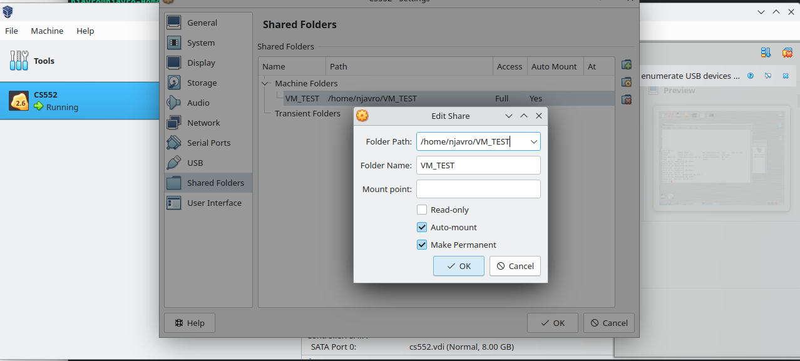
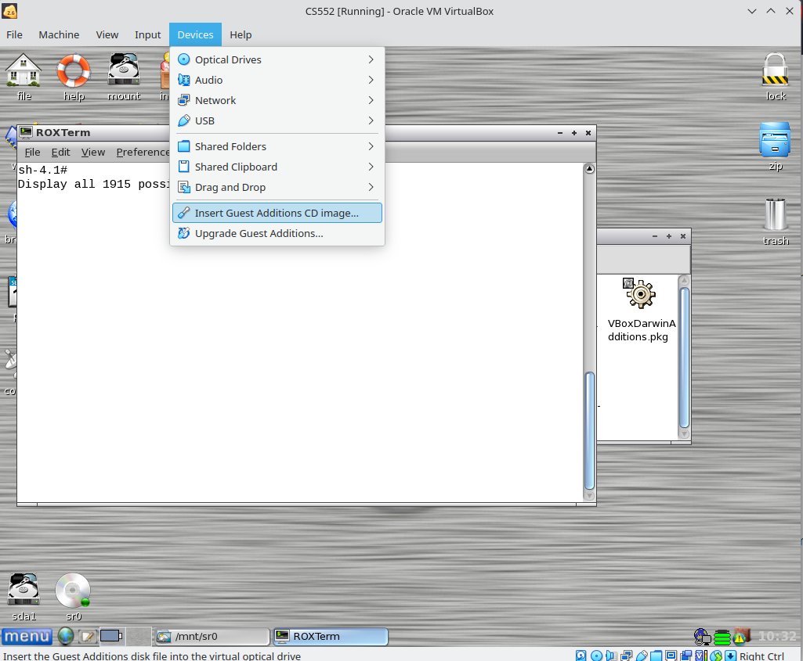
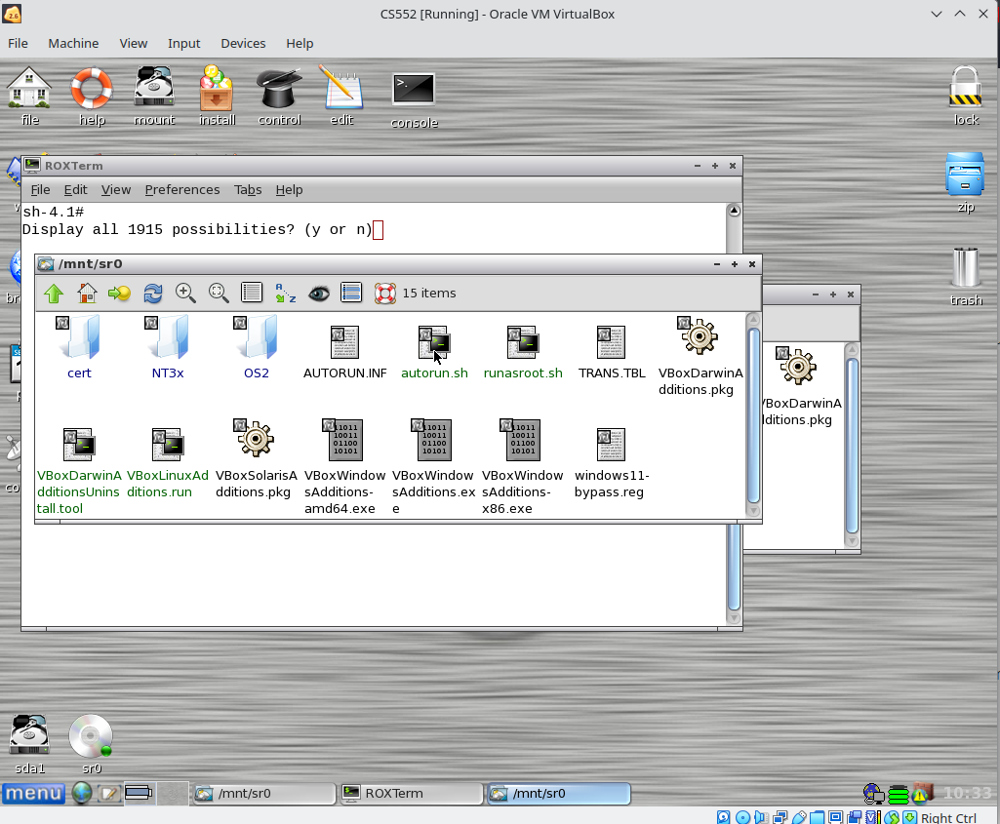

- Creating Shared Folders in VirtualBox
[Back]
Setting up shared folder
This has been tested on Linux host machine, for Windows consult VirtualBox user manual. Link is posted on my lab schedule under resources.
- Create a folder on your host machine.
- Before the machine is running, access its settings and navigate towards "Shared Folders".
- Click the icon to create a new shared folder, locate the path to folder you just created in step 1. Name the folder as you want it to show up on guest system. Make sure "auto-mount" and "Make Permanent" options are activated.

-
Click OK, and start up the virtual machine. Once inside the VM navigate to top menu options, Devices -> Insert Guest Additions CD image.... Click on it and you should see CD image titled "SR0" appear on Puppy desktop.

-
Click on the "SRO" CD image, and then click on autorun.sh program. Program will open up the terminal and start running, once it's done it'll prompt you to press ENTER.

- You should be all set. Your shared folder should be created under /media/sf_[YOUR_FOLDER_NAME]. Try creating some files both on host and guest to make sure it's working.
Author: Anton Njavro. Editor: Timothy Borunov